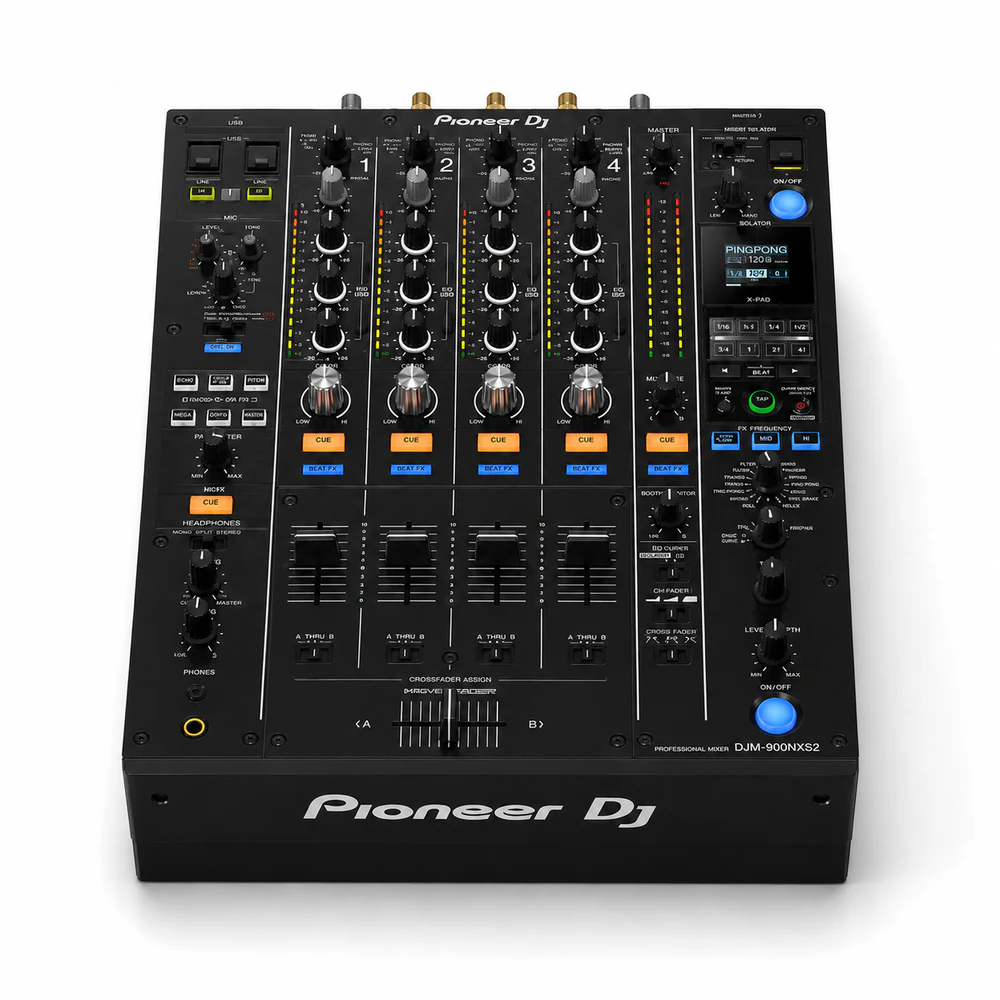

Touring and guest DJs
Create a polished, event-ready setup with the Pioneer DJM-900NXS2 integrated into the venue plan.
Professional DJ Equipment Rental · Miami & South Florida
Professional Pioneer DJ mixer rental for club-style setups, DJ booths, and CDJ configurations.

Rental Details
Confirm the complete equipment list, mixer routing, media format, booth dimensions, power and pickup or delivery requirements. Heat District Productions coordinates the rental with your event schedule, venue requirements and any compatible production elements in the build.
Popular Uses
Create a polished, event-ready setup with the Pioneer DJM-900NXS2 integrated into the venue plan.
Coordinate placement, timing and supporting production around the needs of the event.
Build a complete experience instead of treating each rental as an isolated piece.
Frequently Asked Questions
Professional Pioneer DJ mixer rental for club-style setups, DJ booths, and CDJ configurations. Professional DJ mixer
Current website pricing is $125 / day. Final pricing depends on the selected duration or option, quantity, venue access and any travel outside our standard four-county service area.
Confirm the complete equipment list, mixer routing, media format, booth dimensions, power and pickup or delivery requirements.
Yes. It can be included in a custom build with compatible sound, lighting, DJ, visual, furniture or guest-experience services.
Related Rentals


Heat District Productions
Share your date, venue, guest count and event goals. We will confirm availability and make sure the rental fits the full production plan.